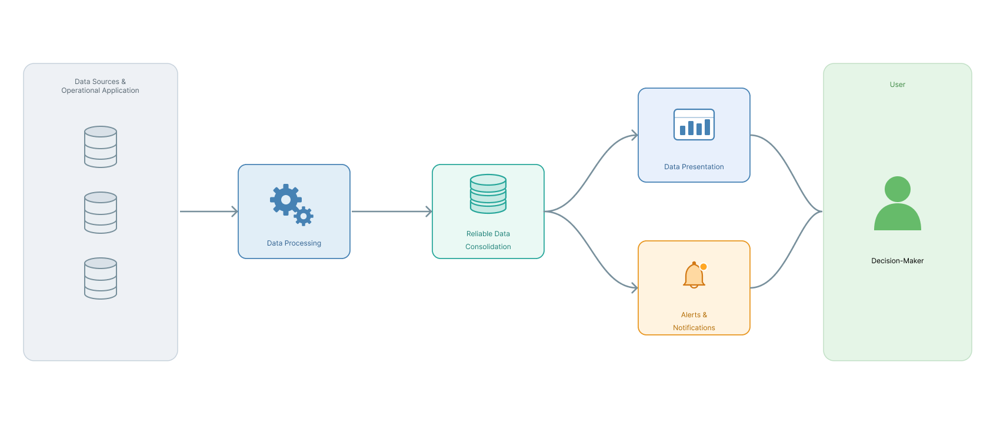
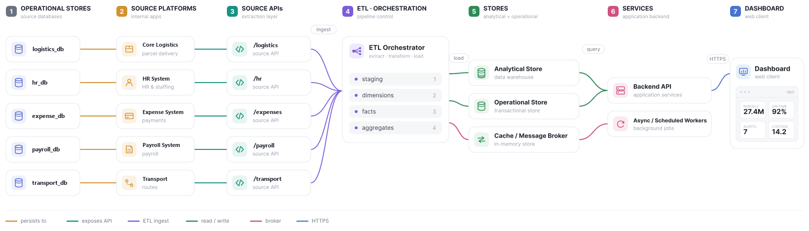
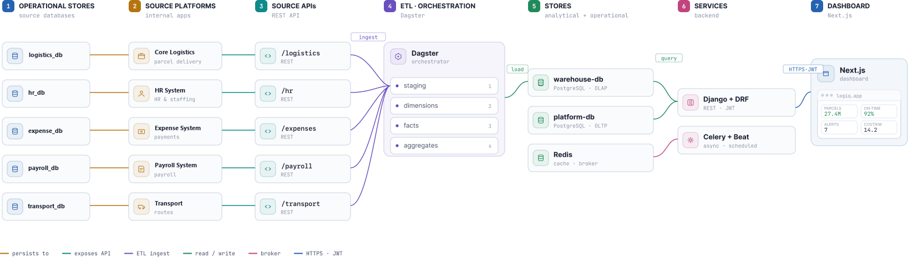

Architecture¶
This page moves from what LOGIQ must do (its specifications) to how it is structured: the functional value chain, the global architecture, the technology stack, security and deployment.
Actors and roles¶
LOGIQ is used by the company's own decision-makers, never by the public. Users do not self-register. They are imported from the HR system and activated by an administrator, who assigns each one a role. The role decides which views the user may open.
| Default role | What they consult |
|---|---|
| General management (Direction Générale) | Overview, Parcel Delivery (3 views), Dedicated Transport (3 views) |
| Parcel & cost-control manager | Overview, Parcel Delivery (3 views) |
| Routes manager | Overview (Route Analysis is future work) |
| Transport manager | Overview, Dedicated Transport (3 views) |
| Administrator | Every view, plus user activation, role assignment and pipeline history |
Permissions are configurable at view level, so the administrator can create new roles as the organisation evolves, without touching the system.
flowchart LR
BU(["Business user"])
AD(["Administrator"])
subgraph LOGIQ
UC1(["Consult consolidated overview"])
UC2(["Consult axis dashboards<br/>Operations · Cost & Profitability · Performance"])
UC3(["Manage & receive alerts"])
UC4(["Manage own preferences"])
UC5(["Administer users & roles"])
UC6(["Supervise the data pipeline"])
end
BU --- UC1 & UC2 & UC3 & UC4
AD --- UC1 & UC2 & UC3 & UC4 & UC5 & UC6Functional specifications¶
| Family | ID | Specification |
|---|---|---|
| Multi-axis decision consultation | FS01 | Consult each axis along its three views |
| FS02 | Show a consolidated overview of both axes | |
| Proactive monitoring | FS03 | Define threshold rules on sensitive indicators |
| FS04 | Alert automatically, through the preferred channel, when a metric drifts | |
| Role-appropriate access & personalisation | FS05 | Show each decision-maker only the sections suited to their role |
| FS06 | Save personal filters and view preferences | |
| FS07 | Customise alert delivery channels | |
| FS08 | Switch between dark and light themes | |
| FS09 | Switch the language between Arabic, French and English | |
| Administration | FS10 | Activate HR-imported users |
| FS11 | Assign and adjust roles | |
| FS12 | Supervise the data-refresh pipeline and its run history |
Functional architecture¶
Read left to right, LOGIQ is a one-directional value chain. Data leaves the operational systems, is processed and consolidated into one reliable base, and then forks into two decision-ready outputs: presentation (answering questions when they are asked) and alerts (answering them before they are asked).

Two further responsibilities cut across the whole chain. Access & personalisation filters every interaction by role and remembers preferences. Administration governs users, roles and the processing pipeline.
Technical specifications¶
The non-functional requirements follow the product-quality characteristics of ISO/IEC 25010.
The 19 technical specifications (TS01–TS19)
| Characteristic | ID | Specification |
|---|---|---|
| Performance efficiency | TS01 | Analytical views return within seconds, not minutes, over the full national history |
| TS02 | Response time stays bounded as data grows, by reading a pre-computed aggregate layer | |
| TS03 | Analytical workloads are isolated from operational ones | |
| Capacity & scalability | TS04 | Sized for tens of millions of parcel-status events |
| TS05 | Refreshed automatically and incrementally, never fully reloaded | |
| Reliability | TS06 | Figures are consistent across every view |
| TS07 | The refresh is idempotent and recoverable | |
| TS08 | Graceful degradation when the analytical store is briefly unavailable | |
| Security | TS09 | Every view gated by RBAC; accounts provisioned from HR, never self-registered |
| TS10 | The two financial perimeters are kept strictly separate | |
| TS11 | Stateless authentication and encrypted transport | |
| Usability | TS12 | Visual-first, readable by non-specialists |
| TS13 | Every KPI has a chart plus an on-demand data-table view | |
| TS14 | Consistent across both axes and their three views | |
| Maintainability | TS15 | Loosely coupled modules on open, non-proprietary foundations |
| TS16 | Operational and analytical concerns cleanly separated | |
| Compatibility & portability | TS17 | Source integration depends only on each system's API contract |
| TS18 | Accommodates the deferred Route Analysis axis without restructuring | |
| TS19 | Reproducibly deployable on modest infrastructure |
Three characteristics drive the design: performance and capacity (the aggregate layer and the analytical/operational split), reliability (layered, quality-gated, idempotent refresh) and security (RBAC and separate financial perimeters).
Global architecture¶
LOGIQ is built from five blocks: a data warehouse, an automated ETL pipeline, analytical dashboards, dynamic alerting, and role and account management kept in step with the HR system.


The five source systems expose their data over REST APIs. A Dagster pipeline ingests them and builds the warehouse in four layers. Results land in two PostgreSQL databases (analytical and operational), with Redis as cache and message broker. A Django + DRF backend serves the dashboard, while a Celery worker runs alerting off the request path. The Next.js web client renders everything over HTTPS.
Technology stack¶
The whole platform is built on open-source, free software. Each tool was chosen for stability, performance at national scale, and existing mastery.
| Concern | Technology | Why |
|---|---|---|
| Languages | Python, SQL | Mature data ecosystem; set-based transformations in the database |
| Data & warehouse | PostgreSQL | One robust engine for the warehouse, the operational DB and the test sources |
| Orchestration | Dagster | Asset-oriented pipeline with built-in lineage and selective re-runs |
| Backend & API | Django (≥ 4.2), Django REST Framework | API, ORM, authentication and permissions |
| Background jobs | Celery, Redis 7 | Alert evaluation and notification fan-out off the request path |
| Frontend | Next.js, React, Tailwind CSS 3 | Type-safe, component-based single-page dashboard |
| Visualisation | ECharts, D3.js, Leaflet, Tremor | Statistical charts, custom diagrams, maps, KPI cards |
| Infrastructure | Docker, Docker Compose, Nginx, Let's Encrypt | Reproducible containers, reverse proxy, automatic TLS |
| Test apparatus (not delivered) | FastAPI, Faker | Simulated source systems and synthetic data |
Two data planes¶
The backend connects to two PostgreSQL databases. A database router sends each query to the right one, transparently to the application code.
flowchart LR
FE["Frontend"] --> BE["Backend<br/>Django + DRF"] --> RT{"Database<br/>router"}
RT -- "everything else (read/write)" --> OP[("Operational DB<br/>users, roles, alert rules,<br/>preferences, notifications,<br/>ETL run history")]
RT -- "analytics models (read-only)" --> AN[("Analytical DB<br/>aggregate layer")]Heavy analytical reads never disturb the running application, and each store can be tuned — and can fail — independently.
Security and conformity¶
LOGIQ handles commercially confidential figures (costs, margins, volumes) and personal data (clients, employees). Security is therefore built into the design from the start, not added at the end.
Access control rests on a governed user base (accounts mirrored from HR, activated by an administrator) and role-based access control at view level:
| Role | Overview | Parcel | Transport | Admin |
|---|---|---|---|---|
| General management | — | |||
| Parcel & cost-control manager | — | — | ||
| Transport manager | — | — | ||
| Routes manager | — | — | — | |
| Administrator |
Sessions use stateless, revocable tokens. Access follows least privilege, and the analytical services are read-only, so no dashboard user can alter the data.
The design is aligned with ISO/IEC 27001, the client's information-security framework, and with Algerian Law 18-07 on personal-data protection:
| Obligation | How the design responds |
|---|---|
| Need-to-know access | RBAC over an HR-governed user base, least-privilege permissions |
| Data minimisation (Law 18-07) | Dashboards show aggregated indicators, not individual client records |
| Integrity of source data | Read-only layer: LOGIQ never writes back to the operational systems |
| Segregation of perimeters | Transport and parcel figures are never mixed |
| Security in transit | Everything is encrypted; only the public web entry point is exposed |
| Traceability | User activation, role changes and every pipeline run are recorded |
Deployment¶
The whole platform is containerised and brought up with a single Docker Compose command.
flowchart TB
U(["User browser"]) -- "HTTPS" --> NX["Nginx<br/>reverse proxy + TLS"]
subgraph VPS["Single VPS"]
NX
subgraph NET["Private Docker network"]
FE["Frontend<br/>Next.js"]
BE["Backend<br/>Django"]
OP[("Operational DB")]
WH[("Warehouse")]
DG["ETL<br/>Dagster"]
CW["Worker<br/>Celery + Redis"]
end
end
NX --> FE
NX --> BE
BE --> OP
BE --> WH
DG --> WH
CW --> BE- Persistence: both databases and the Dagster run history live on named volumes, so redeploying never loses data.
- Network isolation: a host firewall leaves only the web ports open. Databases, Redis, the orchestrator and the worker sit on a private Docker network.
- TLS: a multi-domain Let's Encrypt certificate, renewed automatically. Nginx also carries the event stream used for real-time notifications.
- Hosting: for testing and demonstration, the entire stack runs on one modest VPS (2 vCPU, 8 GB RAM, 100 GB disk, Ubuntu 24.04 LTS). The production deployment is to be provisioned by the company.
- Automation: the ETL runs on schedule, certificates renew themselves, and containers restart automatically on failure or reboot.